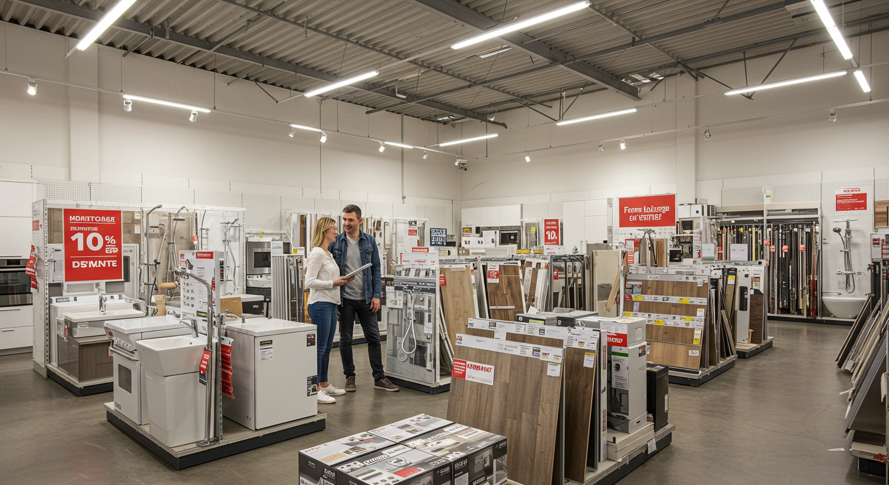
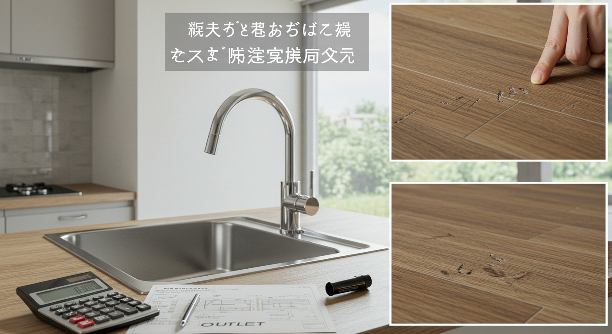

導入

こんにちは。子育てが少し落ち着き、ふと我が家を見渡したとき、「そろそろ、暮らしを見直す時期かもしれないな」と感じている40代のあなたへ。
毎日使うキッチンが少し手狭に感じたり、お風呂の寒さが気になったり、子ども部屋の壁紙が汚れてきたり…。長年住み慣れた愛着のある家だからこそ、もっと快適に、もっと自分らしく過ごせる空間にしたいという想いが、ふつふつと湧き上がってくる頃ではないでしょうか。
「リフォーム」という言葉が頭に浮かぶと、新しい暮らしへの期待で胸が膨らむ一方で、「でも、何から始めたらいいの？」「費用は一体いくらかかるんだろう？」「変な業者さんに捕まったらどうしよう…」といった、たくさんの不安も同時に押し寄せてきますよね。特に、リフォームの中心となる「見積もり」については、専門用語が並んでいて難しそう、というイメージをお持ちの方も多いかもしれません。
ご安心ください。リフォームの成功は、この「見積もり」をいかに理解し、活用するかにかかっていると言っても過言ではありません。そして、それは決して難しいことではないのです。正しい知識を身につけ、手順を踏んでいけば、誰でも安心してリフォーム計画を進めることができます。
この記事は、まさにそんなリフォームの第一歩を踏み出そうとしているあなたのために書きました。リフォームの見積もりとは何か、という基本的なところから、費用相場、失敗しない見積もりの取り方、見積書の具体的なチェックポイント、そして信頼できる業者の選び方まで、あなたが抱えるであろう疑問や不安に一つひとつ丁寧にお答えしていきます。
専門的な内容も、なるべく分かりやすい言葉で、具体的な例を交えながら解説していきますので、どうぞリラックスして読み進めてくださいね。この記事を読み終える頃には、リフォーム見積もりへの漠然とした不安は、理想の住まいを実現するための具体的な計画へと変わっているはずです。
さあ、あなたとご家族にとって最高の住まいづくり、その大切な第一歩を一緒に踏み出しましょう。
１．リフォーム見積もり前に知っておくべきこと

いざリフォームをしよう！と決意しても、すぐに業者さんを探し始めるのは少し早いかもしれません。その前に、ほんの少しだけ準備をしておくだけで、その後のプロセスが驚くほどスムーズに進み、結果的に満足度の高いリフォームにつながるのです。ここでは、見積もりを取る前に、ぜひご家族と一緒に考えておいていただきたい3つの大切なポイントについてお話しします。
なぜ見積もりが必要？リフォーム成功への第一歩
そもそも、なぜリフォームに「見積もり」が必要なのでしょうか。「だいたいの金額が分かればいいのでは？」と思われるかもしれません。しかし、見積もりは単なる金額を知るための紙切れではありません。それは、あなたの理想の住まいを形にするための「設計図」であり、リフォームという航海を成功に導くための「羅針盤」のような、とても重要な役割を持っているのです。
1. リフォームの全体像を把握するため
見積書には、どのような工事が行われ、どんな材料や設備が使われ、それぞれにどれくらいの費用がかかるのかが、詳細に記載されています。これを見ることで、漠然としていたリフォームのイメージが、具体的な「工事内容」と「金額」として明確になります。あなたが思い描くリフォームが、一体どのような工程を経て完成するのか、その全体像を把握することができるのです。
2. 業者との認識のズレを防ぐため
口頭での打ち合わせだけでは、「こうだと思っていた」「そんなつもりではなかった」といった、後々のトラブルの原因になりかねません。見積書は、あなたとリフォーム業者が「どのようなリフォームを行うか」について合意した内容を記録する、大切な約束の証です。工事内容、使用する製品の型番、数量などが明記されることで、お互いの認識のズレを防ぎ、安心して工事を任せることができます。
3. 予算オーバーを防ぐため
リフォームを考えていると、「あれもしたい、これも素敵」と、ついつい夢が膨らみがちですよね。しかし、予算には限りがあります。見積もりを取ることで、希望するリフォームにどれくらいの費用がかかるのかが具体的に分かり、予算内で実現可能かどうかを判断することができます。もし予算をオーバーしてしまう場合でも、どの部分を優先し、どの部分を見直すか、という具体的な検討が可能になります。
4. 複数の業者を比較検討するため
後ほど詳しくお話ししますが、リフォームでは複数の業者から見積もりを取る「相見積もり」が基本です。同じリフォーム内容でも、業者によって金額や提案内容、工事の進め方が異なります。見積書は、それらを客観的に比較検討するための唯一の土台となります。価格だけでなく、提案の質や担当者の熱意なども含めて、あなたにとって最適なパートナーを見つけるための重要な判断材料になるのです。
このように、見積もりはリフォーム計画の根幹をなす、非常に大切なステップです。面倒に感じられるかもしれませんが、この一手間を丁寧に行うことが、後悔のないリフォームを実現するための、確かな第一歩となるのです。
リフォームの目的を明確にする（家族の意見も取り入れて）
「キッチンを新しくしたい」「お風呂をきれいにしたい」という気持ちは、リフォームの素敵なきっかけです。しかし、成功するリフォームのためには、そこからもう一歩踏み込んで、「なぜリフォームしたいのか？」という目的を掘り下げてみることが大切です。
例えば、「キッチンが古くて汚いから新しくしたい」という理由の裏には、もっと具体的なお悩みや願望が隠れているはずです。
- 「収納が少なくて、調理台がいつも物で溢れてしまう。すっきり片付くキッチンにしたい」
- 「一人で壁に向かって料理するのが寂しい。子どもたちの様子を見ながら、会話も楽しめる対面キッチンにしたい」
- 「夫婦二人になったので、一緒に料理を楽しめるような、広々とした作業スペースが欲しい」
- 「掃除が大変。油汚れがつきにくく、サッと拭くだけでキレイになる素材にしたい」
いかがでしょうか。このように目的を具体的にすることで、ただ新しい設備に入れ替えるだけでなく、「どんな問題を解決し、どんな暮らしを実現したいのか」がはっきりしてきます。この「目的」が、リフォームの軸となり、業者に希望を伝える際にも、的確な提案を引き出すための重要な情報となるのです。
そして、この目的を考える上で絶対に欠かせないのが、「家族会議」です。家は、家族みんなが過ごす大切な場所。あなたにとっては最高のキッチンでも、ご主人にとっては動線が悪かったり、お子さんにとっては危険な場所になってしまったりするかもしれません。
ぜひ、ご家族みんなで集まって、今の家の好きなところ、不便に感じているところ、そして「新しい家でどんな風に暮らしたいか」を話し合ってみてください。
【家族会議で話し合いたいことリスト】
-
現状の不満点：
- （例）冬、お風呂場が寒くてヒートショックが心配。
- （例）洗面所が狭くて、朝の支度が混雑する。
- （例）リビングに家族の物が散らかって片付かない。
-
改善したいこと・実現したいこと：
- （例）暖かいユニットバスにして、ゆっくり入浴したい。
- （例）洗面台と収納を大きくして、二人並んでも使えるようにしたい。
- （例）リビングに家族それぞれの荷物を置ける収納棚を作りたい。
-
将来の暮らしの変化：
- （例）子どもが独立した後の部屋の使い方は？
- （例）親との同居の可能性は？
- （例）将来、車椅子を使うことになっても大丈夫？（バリアフリー化）
-
デザインや雰囲気の好み：
- （例）ナチュラルで温かみのある雰囲気、モダンでシンプルな雰囲気など。
- 雑誌の切り抜きや、インターネットで見つけた好きなインテリアの写真を持ち寄るのもおすすめです。
最初は意見がまとまらないこともあるかもしれません。でも、この話し合いのプロセスこそが、家族みんなが満足できるリフォームへの近道です。それぞれの意見を尊重し、優先順位をつけながら、家族の「理想の暮らし」のイメージを共有していきましょう。
予算を決める：無理のない資金計画を立てよう
リフォームの目的が明確になったら、次はいよいよ「お金」の話です。理想を追い求めるあまり、日々の生活を圧迫するような計画になってしまっては本末転倒。安心してリフォームを進めるためには、無理のない資金計画を立てることが何よりも大切です。
予算を決めるとは、単に「リフォームに使える上限金額」を決めることだけではありません。そのお金をどこから準備するのか、そして万が一の事態に備えておくことまで含めて計画することです。
1. 自己資金を確認する
まずは、リフォームのために現金で用意できる金額、つまり「自己資金」がいくらあるかを確認しましょう。預貯金の中から、いくらまでならリフォームに充てられるかを考えます。このとき、教育費や老後の資金など、将来必要になるお金はきちんと確保した上で、余裕のある範囲で予算を組むことが重要です。
2. 資金調達の方法を検討する
自己資金だけでは足りない場合や、手元の現金をあまり減らしたくない場合は、他の資金調達方法も検討します。
- リフォームローン： 金融機関が提供するリフォーム専用のローンです。住宅ローンに比べて手続きが簡単なものが多く、担保が不要なタイプもあります。金利や返済期間は金融機関によって様々なので、比較検討が必要です。
- 親からの資金援助（贈与）： ご両親などから資金援助を受けられる場合もあるかもしれません。住宅取得等資金の贈与税の非課税措置など、税制上の優遇制度が使える可能性もあるので、確認してみると良いでしょう。
3. 「予備費」を必ず確保する
ここが非常に重要なポイントです。リフォームでは、予期せぬ事態が起こることがあります。例えば、壁や床を剥がしてみたら、シロアリの被害が見つかったり、柱が腐っていたり…。こうした場合、追加の補修工事が必要になり、当初の見積もりには含まれていない費用が発生します。
こうした不測の事態に慌てないために、リフォーム工事費全体の10%～20%程度を「予備費」として、あらかじめ予算に組み込んでおきましょう。例えば、300万円の工事を予定しているなら、30万円～60万円を予備費として確保しておくと安心です。この予備費があれば、万が一の時にも落ち着いて対応できますし、もし使わなければ、新しい家具や家電の購入費用に充てることもできます。
【予算計画の立て方ステップ】
- 自己資金の確認： 預貯金のうち、リフォームに使える金額はいくら？
- 借入額の検討： リフォームローンなどを利用する場合、月々無理なく返済できる金額から借入可能額を試算する。
- 総予算の決定： 「自己資金」＋「借入額」＝リフォームにかけられる総予算
- 工事費と予備費の配分： 「総予算」から「予備費（10～20%）」を差し引いた金額が、実際の工事にかけられる予算の上限となります。
ここまで準備ができれば、リフォーム業者に相談する際にも、「予算は〇〇万円で、こんなリフォームがしたいんです」と、具体的で現実的な話を進めることができます。業者側も、その予算内で最大限の提案をしやすくなり、より良いリフォームの実現につながるのです。
２．リフォーム費用の相場を知る

リフォームの目的と予算が決まったら、次に気になるのは「自分たちがやりたいリフォームは、一体いくらくらいかかるの？」ということですよね。費用の相場を知っておくことは、予算計画が妥当かどうかを判断したり、業者から提示された見積もりが適正価格なのかを見極めたりするための、大切な「ものさし」になります。ここでは、箇所別の費用相場や、費用を賢く抑えるコツについて見ていきましょう。
箇所別リフォーム費用相場（キッチン、風呂、トイレなど）
リフォーム費用は、工事を行う場所、使用する設備のグレード、工事の規模によって大きく変動します。ここでは、一般的な40代のご家庭でニーズの高い箇所を中心に、費用の目安をご紹介します。あくまで相場であり、お住まいの状況によって変わることを念頭に置きながら、参考にしてみてください。
| リフォーム箇所 | 費用相場（工事費込み） | 工事内容・ポイント |
|---|---|---|
| キッチン | 50万円 ～ 150万円 |
普及グレード（50～80万円）： 基本的な機能のシステムキッチンへの交換。 ミドルグレード（80～120万円）： 食洗機、掃除しやすいレンジフード、収納力の高いキャビネットなど機能が充実。 ハイグレード（120万円～）： デザイン性の高い素材、最新機能の設備、レイアウト変更（壁付け→対面など）を伴う場合。 |
| 浴室（お風呂） | 60万円 ～ 150万円 |
普及グレード（60～100万円）： 在来工法からユニットバスへの交換、またはユニットバスの入れ替え。 ミドルグレード（100～130万円）： 浴室暖房乾燥機、保温性の高い浴槽、節水シャワーなど快適機能を追加。 ハイグレード（130万円～）： 肩湯やジェットバス、デザイン性の高い壁パネル、浴室のサイズアップなどを伴う場合。 |
| トイレ | 15万円 ～ 50万円 |
便器交換のみ（15～30万円）： 節水型の温水洗浄便座付きトイレへの交換。 内装込み（20～50万円）： 便器交換に加え、床（クッションフロア）や壁紙（クロス）の張り替え。手洗器の新設やタンクレストイレへの変更は費用が上がる傾向。 |
| 洗面所 | 15万円 ～ 50万円 |
洗面化粧台交換のみ（15～30万円）： 既存のものと同サイズの洗面化粧台への交換。 内装込み（20～50万円）： 洗面化粧台の交換に加え、床や壁紙の張り替え、収納棚の設置など。 |
| リビング（内装） | 10万円 ～ 100万円 |
壁紙・床の張り替え（10～40万円）： 6畳～12畳程度の広さが目安。選ぶ素材によって価格が変動。 間取り変更（50万円～）： 壁の撤去や新設を伴う場合。構造によってはできないことも。収納の造作なども人気。 |
| 外壁塗装 | 80万円 ～ 150万円 | 一般的な30坪程度の戸建ての場合。使用する塗料の耐久性（シリコン、フッ素など）によって価格が大きく変わる。足場の設置費用も含まれる。 |
| 屋根リフォーム | 50万円 ～ 200万円 |
塗装（50～80万円）： スレート屋根などの塗り替え。 カバー工法（80～150万円）： 既存の屋根の上に新しい屋根材を重ねる工法。 葺き替え（100～200万円）： 既存の屋根を撤去して新しい屋根材に交換する工法。 |
◆費用を左右する「グレード」とは？
上記の表にも出てきた「グレード」とは、主にキッチンやお風呂などの設備機器のランクのことを指します。
- 普及グレード（ベーシック）： 機能を絞ったシンプルなモデル。コストを重視する場合におすすめです。
- ミドルグレード（標準）： 最も多くのご家庭で選ばれる人気の価格帯。デザインや機能の選択肢が豊富で、コストと満足度のバランスが良いのが特徴です。
- ハイグレード（高級）： 最新機能が搭載されていたり、天然石や無垢材など高級な素材が使われていたりと、デザイン性・機能性ともに最高ランクのモデル。こだわりを実現したい方向けです。
ショールームなどで実物を見ながら、ご自身の暮らしに本当に必要な機能は何かを考えて選ぶと、満足度の高い設備選びができますよ。
リフォーム事例から見る費用感（築年数、広さ別）
相場だけでは、なかなか自分の家に当てはめて考えるのが難しいかもしれません。ここでは、より具体的にイメージできるよう、よくあるリフォームの事例をいくつかご紹介します。
【事例1】築20年・70㎡マンション｜水回り中心リフレッシュリフォーム
- 家族構成： 夫婦＋中学生の子ども1人
- リフォームの目的： 設備の老朽化が気になり始めた水回り（キッチン、浴室、トイレ、洗面所）を一新して、家事の効率を上げ、快適な毎日を送りたい。
-
工事内容：
- キッチン：壁付けI型キッチンを、食洗機付きのシステムキッチンに交換（ミドルグレード）
- 浴室：在来浴室を、浴室暖房乾燥機付きのユニットバスに交換（ミドルグレード）
- トイレ：節水型の温水洗浄便座付きトイレに交換、壁紙・床の張り替え
- 洗面所：収納三面鏡付きの洗面化粧台に交換、壁紙・床の張り替え
- リフォーム費用合計：約280万円
- （内訳目安）キッチン：90万円、浴室：100万円、トイレ：25万円、洗面所：25万円、諸経費：40万円
【事例2】築30年・100㎡戸建て｜子どもの独立を機にしたLDKリフォーム
- 家族構成： 夫婦2人
- リフォームの目的： 子どもが独立し、夫婦二人の時間が増えた。細かく仕切られていたダイニングキッチンとリビングを一体化し、開放的でゆったりと過ごせる空間にしたい。
-
工事内容：
- 間取り変更：ダイニングキッチンとリビングの間の壁を撤去し、一つの広いLDKに。
- キッチン：壁に向いていたキッチンを、夫婦で立てるアイランドキッチンに変更（ハイグレード）
- 内装：LDK全体の床を無垢材フローリングに、壁・天井の壁紙を張り替え。
- 収納：壁一面に、趣味のものを飾れる造作棚を設置。
- 窓：断熱性能の高いペアガラスサッシに交換。
- リフォーム費用合計：約550万円
- （内訳目安）解体・木工事：120万円、キッチン設備：180万円、内装工事：100万円、建具・窓工事：70万円、諸経費：80万円
このように、リフォームは「どこを」「どのように」変えたいかによって、費用が大きく変わってきます。ご自身の家の状況や希望と照らし合わせながら、大まかな費用感を掴んでみてください。
費用を抑えるコツ：優先順位をつける
「やりたいことはたくさんあるけれど、予算は限られている…」というのは、リフォームを考える多くの方が抱える悩みです。でも、少し工夫するだけで、満足度を下げずに費用を賢く抑えることは可能です。大切なのは、何にお金をかけ、どこでコストを調整するか、メリハリをつけることです。
1. リフォームの「優先順位」を決める
まずは、家族会議で明確にした「リフォームの目的」をもう一度思い出してみましょう。そして、「絶対に譲れないこと」と「できればやりたいこと」、「今回は見送っても良いこと」に分けて、優先順位をつけます。
- 絶対に譲れないこと（MUST）： （例）冬場のヒートショック対策として、お風呂に浴室暖房乾燥機は必ず付けたい。
- できればやりたいこと（WANT）： （例）キッチンの天板は、憧れの人工大理石にしたい。
- 今回は見送っても良いこと（OPTION）： （例）トイレの壁紙は、まだきれいだから今回はそのままでもいいかな。
このように優先順位がはっきりしていると、予算オーバーしそうになった時に、どこを削るべきか冷静に判断できます。
2. 設備のグレードを見直す
毎日使うもの、肌に触れるものなど、こだわりたい部分にはお金をかけ、それ以外の部分では少しグレードを落とす、という考え方です。例えば、キッチンなら、天板や水栓など、こだわりたい部分だけハイグレードなものを選び、キャビネットの扉材は標準的なものにする、といった選び方ができます。ショールームの展示品はハイグレードなものが多いですが、同じシリーズでもグレードを選べる場合がほとんどなので、業者さんに相談してみましょう。
3. 工事の範囲をまとめる
水回りのリフォーム（キッチン、浴室、トイレなど）は、配管工事などを一度に行うことで、別々に工事するよりも費用や工期を圧縮できる場合があります。また、壁紙の張り替えなども、一部屋だけでなく、隣の部屋や廊下もまとめて行うと、職人さんの手間が一度で済むため、割安になることがあります。将来的にリフォームを考えている箇所があれば、この機会にまとめてできないか検討してみるのも一つの手です。
4. シンプルな形状・デザインを選ぶ
例えば、キッチンならL字型やコの字型よりも、シンプルなI（アイ）型の方が安価です。浴槽も、複雑な形状のものより、標準的な長方形の方が価格を抑えられます。デザインがシンプルなものは、価格が手頃なだけでなく、飽きが来ずに長く使えるというメリットもあります。
5. 補助金や助成金を活用する
国や自治体では、省エネ、耐震、バリアフリーなど、特定の条件を満たすリフォームに対して、補助金や助成金制度を設けている場合があります。これは返済不要のお金なので、活用しない手はありません。詳しくは後の章で解説しますが、こうした制度があることも頭の片隅に置いておきましょう。
費用を抑えることばかりに気を取られて、本当に必要な機能まで削ってしまっては、せっかくのリフォームが残念な結果になってしまいます。大切なのは、ご自身の暮らしにとっての「価値」を見極め、賢くお金を使うことです。
３．失敗しない！リフォーム見積もりの取り方

リフォームの目的、予算、そして費用の相場観が掴めてきたら、いよいよリフォーム業者に見積もりを依頼するステップに進みます。ここは、リフォームの成功を左右する非常に重要な局面です。焦らず、ポイントを押さえて進めていきましょう。
複数の業者に見積もりを依頼する（相見積もりの重要性）
「知り合いの工務店さんにお願いしようかな」「チラシが入っていた会社が良さそう」と、一社に絞って話を進めたくなる気持ちも分かります。しかし、リフォームで後悔しないためには、必ず複数の業者から見積もりを取る「相見積もり（あいみつもり）」を行うことを強くおすすめします。理想は3社程度です。
なぜ相見積もりはそれほど重要なのでしょうか。それには、主に3つの理由があります。
1. 価格の適正さがわかる
リフォームには、車や家電のような「定価」がありません。同じ工事内容でも、業者によって見積もり金額は異なります。これは、会社ごとの利益率の違い、職人さんの手配方法、材料の仕入れルートなどが異なるためです。一社だけの見積もりでは、その金額が高いのか安いのか、妥当なのかを判断する基準がありません。複数の見積もりを比較することで、初めてそのリフォームの適正な価格帯が見えてくるのです。法外に高い金額を提示する業者を避けられるだけでなく、逆に安すぎる見積もりに潜むリスク（手抜き工事や追加請求など）に気づくきっかけにもなります。
2. 提案内容を比較できる
リフォームのプロである業者さんは、それぞれ得意な分野や独自のノウハウを持っています。あなたが伝えた要望に対して、A社は「コストを抑えた現実的なプラン」を、B社は「少し予算は上がるけれど、将来を見据えた画期的なプラン」を、C社は「デザイン性に優れたおしゃれなプラン」を提案してくれるかもしれません。複数の提案を比較することで、自分たちでは思いつかなかったようなアイデアに出会えたり、自分たちの本当の希望がより明確になったりします。価格だけでなく、「提案力」という視点で業者を比較できるのが、相見積もりの大きなメリットです。
3. 担当者との相性を見極められる
リフォームは、契約から工事完了まで、数週間から数ヶ月にわたって担当者と密にコミュニケーションを取ることになります。こちらの話を親身に聞いてくれるか、質問に丁寧に答えてくれるか、レスポンスは早いかなど、見積もりを依頼する過程でのやり取りは、その担当者や会社の姿勢を知る絶好の機会です。いくらプランや金額が良くても、担当者と「なんとなく合わないな」と感じる場合、その後の打ち合わせがストレスになったり、言いたいことが言えずに不満が残ったりする可能性があります。信頼して大切な我が家を任せられるかどうか、人柄や相性を見極めるためにも、複数の担当者と会って話してみることは非常に大切です。
◆相見積もりを取った後の断り方
複数の業者に見積もりを依頼するということは、最終的に契約しない業者さんが出てくるということです。「断るのは申し訳ない…」と感じるかもしれませんが、相見積もりはリフォーム業界ではごく一般的なこと。業者側もそれは理解しています。大切なのは、誠実な態度で、はっきりとお断りの意思を伝えることです。電話かメールで、「今回は、他社様と契約することにいたしました。ご丁寧に対応いただき、ありがとうございました」と、感謝の気持ちとともに伝えれば問題ありません。曖昧な態度はかえって相手に失礼になりますので、正直に伝えるようにしましょう。
見積もり依頼時の伝え方：希望と予算を明確に
さあ、相見積もりを取る業者をいくつかリストアップしたら、いよいよ見積もりを依頼します。このとき、各社に伝える「条件」を揃えることが、正確な比較検討をする上で非常に重要になります。A社には「とにかく安く」、B社には「デザイン重視で」とバラバラの要望を伝えてしまうと、出てくる見積もりも全く違うものになり、どちらが良いのか比べようがなくなってしまいます。
以下のポイントをまとめたメモを用意して、どの業者にも同じ内容を伝えるように心がけましょう。
【見積もり依頼時に伝えるべきことリスト】
-
基本情報
- 氏名、住所、連絡先（電話番号、メールアドレス）
- 建物の種類（戸建て or マンション）、築年数、構造（木造など）
-
リフォームしたい場所
- （例）キッチン、浴室、リビングなど
-
現状の不満点・課題
- （例）キッチンの収納が足りない、冬場のお風呂が寒い、リビングが暗いなど、具体的に。
- 可能であれば、現状の写真を撮っておくと、より伝わりやすくなります。
-
リフォームの目的・実現したい暮らし
- （例）家族と会話しながら料理できる対面キッチンにしたい、掃除が楽なユニットバスでゆっくりくつろぎたい、など「なぜリフォームしたいのか」を伝える。
-
具体的な要望（譲れない条件と、できればの希望）
-
設備について：
- （例）食洗機は必ず付けたい。コンロはIH希望。
- もし、使いたいメーカーや商品の型番が決まっている場合は、それも伝えましょう。（例：「TOTOのサザナを入れたい」など）
-
デザインについて：
- （例）床は明るい色のフローリングで、壁は白を基調としたナチュラルな雰囲気にしたい。
- 雑誌の切り抜きや、Instagramなどで見つけた好みの写真を見せると、イメージが格段に伝わりやすくなります。
-
設備について：
-
予算
- 「予算は〇〇万円くらいで考えています」と、正直に伝えましょう。「安く見積もられるかも」と予算を低めに言うのはNGです。予算が分からないと、業者はどこまでの提案をして良いのか分からず、結果的に的外れなプランが出てきてしまう可能性があります。予算を伝えることで、業者はその範囲内で最大限の提案を考えてくれます。
- 「予備費は別で考えています」と一言添えるのも良いでしょう。
-
希望の工事時期
- （例）「来年の春頃までには完成させたい」など、大まかなスケジュール感を伝えます。
これらの情報を整理して伝えることで、業者もあなたの要望を正確に理解し、精度の高い見積もりと、より的を射た提案をしてくれるはずです。
無料見積もりサービスの活用：手軽に概算を知る
「そもそも、どの業者に声をかけたらいいか分からない…」という方もいらっしゃるでしょう。そんな時に便利なのが、インターネットの「リフォーム一括見積もりサービス」です。
これは、サイト上でリフォームしたい場所や要望を入力するだけで、あなたの地域や工事内容に対応できる複数のリフォーム会社を無料で紹介してくれるサービスです。
◆一括見積もりサービスのメリット
- 手間が省ける： 一社一社、自分で業者を探して連絡する手間が省け、一度の入力で複数の業者にアプローチできます。
- 業者探しのきっかけになる： 地元で評判の良い工務店など、自分では見つけられなかった優良な業者に出会える可能性があります。
- 断りやすい： サービス経由での依頼なので、もし断る場合でも心理的な負担が少ないと感じる方もいます。
◆一括見積もりサービスの注意点
- 業者からの連絡が集中する： 申し込み後、複数の業者から一斉に電話やメールが来ることがあります。対応できる時間帯をあらかじめ考えておくと良いでしょう。
- 加盟業者の質は様々： サービスによっては、加盟審査の基準が異なるため、必ずしも全ての業者が優良とは限りません。紹介された業者についても、後述する「信頼できる業者の選び方」を参考に、ご自身の目でしっかりと見極めることが大切です。
一括見積もりサービスは、あくまで「業者探しのきっかけ」として賢く活用するのがおすすめです。サービスを通じて出会った業者の中から、良さそうだと感じた2～3社に絞り、実際に家を見てもらう「現地調査」を経て、詳細な見積もりを出してもらう、という流れがスムーズです。
この段階では、まだ契約ではありません。色々な会社の担当者と話をして、リフォームに関する知識を深める良い機会だと捉え、楽しみながら進めていきましょう。
４．リフォーム見積書の見方を徹底解説

複数の業者から見積書が提出されたら、いよいよ比較検討のステージです。しかし、専門用語や細かい数字が並んだ見積書を前に、「どこをどう見たらいいのか分からない…」と戸惑ってしまう方も少なくないでしょう。でも、ご安心ください。チェックすべきポイントさえ押さえれば、見積書はリフォーム計画の確かな道しるべになります。ここでは、見積書を読み解くための具体的な方法を、分かりやすく解説していきます。
見積書のチェックポイント：内訳、数量、単価
業者によって書式は様々ですが、良い見積書には共通点があります。それは「誰が見ても、何の工事にいくらかかるのかが分かる」ということです。逆に、「一式」という言葉が多用されている大雑把な見積書は要注意です。以下の5つの項目がきちんと記載されているか、一つひとつ確認していきましょう。
| 項目 | 内容 | チェックポイント |
|---|---|---|
| ① 工事項目（工種） | どのような工事を行うかの名称。「仮設工事」「木工事」「内装工事」「設備工事」など。 |
□ 工事内容が具体的に書かれているか？ □「〇〇工事一式」のように、内容が不明瞭な項目が多くないか？ |
| ② 内訳（品名・品番） | 具体的に使用する材料や設備の商品名、メーカー名、型番（品番）など。 |
□ キッチンやトイレなどの設備は、メーカー名・商品名・型番まで明記されているか？ □ 壁紙や床材なども、品番や規格が記載されているか？ |
| ③ 数量 | 材料や設備をいくつ使うか、工事を何ヶ所行うかなどの数。 |
□ 数量は妥当か？（例：窓の数、ドアの枚数など） □ 自分で測れる部分は、実際の寸法と合っているか確認してみる。 |
| ④ 単位 | 数量の単位。「m（メートル）」「㎡（平米）」「箇所」「台」「式」など。 | □ 単位は適切か？（例：壁紙は「m」や「㎡」、設備は「台」、工事全体は「式」など） |
| ⑤ 単価 | 材料や手間賃などの1単位あたりの価格。 | □ 極端に高い、または安い単価はないか？（他社の見積もりと比較） |
| ⑥ 金額（価格） | 「単価 × 数量」で計算された、各項目の小計金額。 | □ 計算は合っているか？（簡単な検算をしてみる） |
◆特に注意したい「一式」という表記
見積書でよく見かける「〇〇工事 一式 〇〇円」という表記。これは、細かく分けるのが難しい工事をまとめたもので、必ずしも悪いわけではありません。例えば、現場の養生（床や壁を保護すること）や、工事後の清掃などは「諸経費一式」として計上されることが一般的です。
しかし、本来であれば細かく内訳を出せるはずの「木工事一式」「内装工事一式」といった表記が多い見積書は注意が必要です。どのような材料がどれくらい使われるのか分からず、後で「思っていた材料と違う」といったトラブルの原因になりかねません。また、他社の見積もりと比較するのも難しくなります。
もし「一式」表記で不明な点があれば、「この一式の内訳を教えていただけますか？」と遠慮なく質問しましょう。その質問に対して、丁寧に説明してくれる業者は信頼できる可能性が高いと言えます。
◆良い見積書と悪い見積書の例
悪い例 ✗
| 工事項目 | 金額 |
|---|---|
| キッチン交換工事 | 850,000円 |
| 内装工事 | 150,000円 |
| 諸経費 | 100,000円 |
| 合計 | 1,100,000円 |
→ これでは、どんなキッチンが使われるのか、内装工事の範囲も分からず、比較検討ができません。
良い例 ○
| 工事項目 | 品名・品番 | 数量 | 単位 | 単価 | 金額 |
|---|---|---|---|---|---|
| 設備機器費 | |||||
| システムキッチン | TOTOミッテ I型2550 | 1 | 台 | 550,000 | 550,000 |
| 組立・設置工事費 | |||||
| 既存キッチン解体撤去 | 1 | 式 | 30,000 | 30,000 | |
| 新規キッチン組立設置 | 1 | 式 | 80,000 | 80,000 | |
| 関連工事費 | |||||
| 給排水設備工事 | 1 | 式 | 50,000 | 50,000 | |
| ガス配管工事 | 1 | 式 | 40,000 | 40,000 | |
| 電気配線工事 | 1 | 式 | 30,000 | 30,000 | |
| 内装工事費 | |||||
| 天井・壁クロス張替 | サンゲツ SP-〇〇 | 30 | ㎡ | 1,500 | 45,000 |
| 床クッションフロア張替 | 東リ CF-〇〇 | 5 | ㎡ | 3,000 | 15,000 |
→ このように、商品名や工事内容が具体的に記載されていれば、内容を正確に把握でき、他社との比較もしやすくなります。
専門用語を理解する：不明点は必ず質問
見積書には、普段あまり聞き慣れない専門用語がいくつか出てきます。これらを事前に知っておくと、見積もりの理解がぐっと深まります。
【よく出てくる見積もり用語集】
-
仮設工事費：
工事を安全かつスムーズに進めるために必要な、一時的な設備にかかる費用です。具体的には、外壁塗装の際の「足場」の設置・解体費用、工事車両の「駐車場代」、現場の「仮設トイレ」や「仮設電気・水道」の設置費用などが含まれます。 -
養生（ようじょう）費：
工事中に、既存の床や壁、家具などが傷ついたり汚れたりしないように、ビニールシートやボードで保護するための費用です。丁寧な養生は、工事の品質にも関わる重要な作業です。 -
解体撤去費：
既存のキッチンやユニットバス、壁、床などを取り壊し、運び出すための費用です。 -
産廃処理費（産業廃棄物処理費）：
解体工事で出た廃材などを、法律に従って正しく処分するための費用です。この費用を不当に安くしている業者は、不法投棄などの問題を起こす可能性もあるため注意が必要です。 -
木工事（大工工事）：
柱や壁の下地を作ったり、床のフローリングを張ったり、ドアや窓の枠を取り付けたりと、主に大工さんが行う工事全般を指します。 -
諸経費：
現場の管理費、事務所の運営費、交通費、通信費、書類作成費など、工事を全体的に管理・運営するために必要な間接的な費用のことです。工事費全体の10%～15%程度が一般的です。この項目が極端に高い、または記載がない場合は、理由を確認した方が良いでしょう。
これらの用語を見ても、もし少しでも「これは何のことだろう？」と疑問に思うことがあれば、決してそのままにせず、必ず担当者に質問してください。「こんな初歩的なことを聞いたら恥ずかしいかも…」なんて思う必要は全くありません。あなたの質問に、いかに分かりやすく丁寧に答えてくれるか。それも、信頼できる業者かどうかを見極めるための大切な判断材料になるのです。
追加工事に注意：見積もり段階で確認を
見積書に記載された金額が、最終的に支払う総額になるとは限りません。リフォームでは、工事を始めてから発覚する問題により、「追加工事」が必要になるケースがあるからです。
◆追加工事が発生しやすいケース
-
解体後の問題発覚：
床や壁を剥がしてみたら、下地が腐っていた、シロアリの被害にあっていた、雨漏りが見つかった、など。これは、リフォームで最も多い追加工事のパターンです。 -
予期せぬ障害物：
壁の中に、図面にはない柱や配管が通っていて、予定していた場所に棚が設置できない、など。 -
仕様変更：
工事の途中で、「やっぱり壁紙の色をこっちに変えたい」「コンセントをもう一つ増やしたい」など、お客様側の希望で工事内容を変更する場合。
こうした不測の事態に備えるために、あらかじめ「予備費」を確保しておくことが重要ですが、それと同時に、契約前の見積もり段階で、追加工事に関する取り決めを業者としっかり確認しておくことがトラブルを防ぐ鍵となります。
【見積もり段階で確認しておくべきこと】
-
「追加工事が発生する可能性があるのは、どのような場合ですか？」
事前にリスクを説明してくれる業者は誠実です。あなたの家の状況を見て、「この壁の中は、もしかしたら追加工事が必要になるかもしれません」といった可能性を指摘してくれるかどうかもポイントです。 -
「もし追加工事が必要になった場合、どのような手順で連絡・確認をしていただけますか？」
優良な業者は、「必ず工事を止めてお客様にご報告し、追加の見積もりを提示して、ご納得いただいてから作業を再開します」というように、明確なルールを持っています。勝手に工事を進めて、事後報告で追加料金を請求するような業者は絶対に避けなければなりません。 -
「追加工事の費用は、どのような基準で算出されますか？」
単価や算出根拠についても、事前に確認しておくとより安心です。
これらの確認事項は、口頭だけでなく、できれば見積書や契約書の特記事項として一文を加えてもらうと、より確実な証拠となります。しっかりとした事前確認が、後々の「言った、言わない」のトラブルを防ぎ、安心して工事期間を過ごすための、何よりのお守りになるのです。
５．リフォーム業者選びで後悔しないために

どんなに素晴らしいリフォームプランを立て、完璧な見積書を比較検討しても、最終的にその工事を形にするのは「リフォーム業者」です。業者選びは、リフォームの満足度を決定づける、最も重要な選択と言えるでしょう。価格の安さだけで選んでしまうと、手抜き工事やアフターフォローの不備など、後々大きな後悔につながることも。ここでは、大切な我が家を安心して任せられる、信頼できるパートナーを見つけるためのポイントをご紹介します。
信頼できる業者の選び方：実績、口コミ、資格
リフォーム業者は、大手ハウスメーカーから、地元の工務店、設計事務所、専門工事店まで、実に様々です。どの業者が良い・悪いということではなく、あなたのリフォームの目的や規模に合った、信頼できる業者を選ぶことが大切です。以下の点を総合的にチェックしてみましょう。
1. 建設業許可や各種資格の有無
- 建設業許可： 500万円以上のリフォーム工事を行うには、都道府県知事または国土交通大臣の「建設業許可」が必要です。これは、一定の技術力や経営基盤があることの証明になります。許可番号は、業者のウェブサイトや会社概要に記載されていることが多いので確認してみましょう。
- 専門資格： 担当者や社内に「建築士」「建築施工管理技士」といった国家資格を持つ人がいるかどうかも、技術力を測る一つの目安になります。「増改築相談員」や「マンションリフォームマネージャー」など、リフォームに特化した資格もあります。資格が全てではありませんが、専門知識を持ったスタッフがいるという安心感につながります。
2. 施工実績の豊富さ
業者のウェブサイトには、これまでの施工事例が掲載されていることがほとんどです。
- やりたいリフォームと似た事例があるか： あなたが希望する水回りのリフォームや、LDKの間取り変更など、似たような工事の実績が豊富にあれば、ノウハウも蓄積されており、的確な提案が期待できます。
- デザインのテイストが好みと合うか： 施工事例の雰囲気を見て、ご自身の好みのテイストと合うかどうかも確認しましょう。ナチュラル系、モダン系など、業者によって得意なデザインの傾向があります。
- 写真の質： 工事中や完成後の写真が、きれいに整理されてたくさん掲載されている業者は、自分たちの仕事に自信と誇りを持っている証拠とも言えます。
3. 口コミや評判
実際にその業者でリフォームをした人の「生の声」は、非常に参考になります。
- インターネットの口コミサイト： 「〇〇市 リフォーム 口コミ」などで検索すると、様々な口コミサイトが見つかります。良い評価だけでなく、悪い評価にも目を通し、その内容が客観的かどうかを見極めることが大切です。
- Googleマップのレビュー： 会社の名前で検索すると、Googleマップ上にレビューが投稿されていることがあります。
- 近所の評判： もし、ご近所でリフォーム工事をしているお宅があれば、どこの業者が施工しているか見てみたり、差し支えなければ評判を聞いてみたりするのも良い方法です。実際に工事の様子（職人さんのマナーや現場のきれいさなど）を見ることができるのは、大きな判断材料になります。
4. 会社の所在地と経営年数
- 事務所が近くにあるか： 何かあった時にすぐに駆けつけてもらえるよう、自宅から車で30分～1時間圏内など、なるべく近くに事務所を構えている業者が安心です。
- 長く経営しているか： 設立から年数が経っている会社は、それだけその地域で信頼を積み重ねてきた証拠とも言えます。地域に根差した工務店などは、評判が生命線なので、誠実な仕事をする傾向があります。
これらの情報を多角的に集め、総合的に判断することで、信頼できる業者候補を絞り込んでいくことができます。
業者とのコミュニケーション：相性も重要
見積もりの内容や会社の信頼性もさることながら、最終的に決め手となることが多いのが、担当者との「相性」です。リフォームは、打ち合わせから工事完了、そしてその後のアフターフォローまで、長い付き合いになります。ストレスなく、何でも相談できる関係性を築けるかどうかは、リフォームの満足度に直結します。
打ち合わせの際には、以下の点を意識して担当者を観察してみてください。
【担当者チェックリスト】
-
話を親身に聞いてくれるか？
あなたの話にしっかりと耳を傾け、漠然とした要望の裏にある本当の悩みや希望を汲み取ろうとしてくれる姿勢がありますか？ 業者の都合や得意な工法を押し付けてくるような担当者は要注意です。 -
質問への回答は丁寧で分かりやすいか？
専門的なことについて質問した際に、専門用語を並べるのではなく、素人にも分かるように、例え話を交えるなどして丁寧に説明してくれますか？ -
レスポンスは早いか？
メールの返信や、電話の折り返しは迅速ですか？ レスポンスの速さは、その会社の仕事に対する姿勢を反映していることが多いです。 -
メリットだけでなく、デメリットも説明してくれるか？
「この素材はおしゃれですが、傷がつきやすいという面もあります」「この間取りは開放的ですが、冷暖房の効率は少し落ちるかもしれません」というように、良い点だけでなく、考えられるデメリットやリスクについても正直に話してくれる担当者は信頼できます。 -
あなたにとってプラスになる提案をしてくれるか？
言われた通りの見積もりを出すだけでなく、「奥様のご希望でしたら、こちらの収納の方が使いやすいですよ」「将来を考えると、ここに手すりを付けておいた方が安心です」といった、プロならではの視点で、より良い暮らしのための提案をしてくれますか？ -
人として好感が持てるか？
最終的には、清潔感があるか、言葉遣いは丁寧か、約束を守るかといった、基本的な人柄も大切です。この人になら、安心して家の鍵を預けられる、と思えるかどうかが一つの基準になります。
もし、複数の業者で最後まで迷ったなら、最後は「この担当者さんと一緒に家づくりをしたい」と心から思えるかどうかで決めるのも、一つの良い方法です。
アフターフォローの確認：保証内容、期間
リフォームは、工事が終わればすべて完了、というわけではありません。実際に住み始めてから、「ドアの建付けが悪くなった」「壁紙が剥がれてきた」といった不具合が出てくる可能性もゼロではありません。そんな万が一の時に、しっかりと対応してくれるかどうか、アフターフォロー体制の確認は絶対に欠かせません。
契約前に、以下の点について必ず書面で確認しましょう。
1. 保証の種類（メーカー保証と工事保証）
リフォームの保証には、大きく分けて2種類あります。
- メーカー保証： キッチンやユニットバス、給湯器といった「設備機器」そのものに対する保証です。通常1～2年程度の保証期間がメーカーによって定められています。
- 工事保証： リフォーム業者が、自社の「工事部分」に対して行う独自の保証です。例えば、「内装の剥がれ」や「配管からの水漏れ（工事が原因の場合）」などが対象になります。この工事保証の有無と内容が、業者選びの重要なポイントになります。
2. 工事保証の内容と期間
- 保証書の発行： 信頼できる業者は、独自の「工事保証書」を発行してくれます。保証の対象となる工事箇所、保証期間、そして免責事項（保証の対象外となるケース）が明記されているかを確認しましょう。
- 保証期間： 工事内容によって異なりますが、内装なら1～2年、構造に関わる部分や防水工事なら5～10年など、適切な保証期間が設定されているかを確認します。
- 保証の範囲： どのような不具合が保証の対象になるのか、具体的な範囲を質問しておきましょう。
3. 定期点検の有無
工事完了後、1年後、2年後などに、業者側から「何かお困りのことはありませんか？」と定期的に点検に来てくれるサービスがあるかどうかも確認しましょう。こうした定期点検を行っている業者は、工事に責任を持ち、お客様と長く付き合っていきたいと考えている証拠です。
4. トラブル発生時の連絡先と対応
万が一、不具合が発生した際に、どこに連絡すれば良いのか、連絡先と受付時間を明確にしておきましょう。また、連絡してからどれくらいの時間で対応してもらえるのか、目安を聞いておくと安心です。
価格が少し高くても、こうしたアフターフォローが充実している業者を選ぶことが、長い目で見た時の本当の安心につながります。契約を交わす前に、必ず保証内容について詳しく説明を求め、納得した上でハンコを押すようにしてください。
６．リフォーム見積もりでよくある疑問と注意点

リフォームの見積もりを進めていく中で、「これってどうなんだろう？」とふと疑問に思うことや、少し不安に感じることが出てくるかもしれません。ここでは、多くの方が抱きがちな疑問にお答えするとともに、トラブルを未然に防ぐための注意点について解説します。
見積もりは無料？有料？
「見積もりをお願いしたいけれど、お金がかかるのかしら…」と心配される方もいらっしゃるかもしれません。
結論から言うと、ほとんどのリフォーム会社では、最初の見積もり（概算見積もり）や現地調査は無料で行っています。業者側も、まずは自社のことを知ってもらい、提案を見て（聞いて）もらわなければ契約にはつながらないと考えているため、ここまではサービスの一環と捉えているのが一般的です。
ただし、以下のようなケースでは、見積もりが有料になる場合があります。
◆有料になる可能性があるケース
-
詳細な図面やCGパースの作成を依頼する場合：
契約前に、完成後のイメージをより具体的に把握するため、詳細な設計図面や、立体的なCGパース（完成予想図）の作成を依頼すると、設計料やデザイン料として費用が発生することがあります。これは、専門的な知識と時間のかかる作業だからです。 -
相見積もりであることを伝えず、何度もプラン変更を依頼する場合：
契約の意思が低いと判断された上で、何度も詳細なプランの練り直しを要求すると、業者側も手間がかかるため、有料となる可能性が出てきます。 -
特殊な調査が必要な場合：
耐震診断や、床下の詳細な調査など、専門の機材や技術者が必要となる調査を伴う見積もりの場合は、調査費用が実費で請求されることがあります。
◆トラブルを避けるためのポイント
大切なのは、見積もりを依頼する最初の段階で、「どこまでが無料で、どこからが有料になりますか？」とはっきりと確認しておくことです。誠実な業者であれば、有料になる場合は必ず事前にその旨と金額を伝えてくれます。何も説明がないまま、後から費用を請求されるようなことは、まずありません。もし不安な場合は、「有料になる作業が発生する際は、必ず事前にご相談ください」と一言伝えておくと、お互いに気持ちよく進めることができます。
見積もり後のキャンセルは可能？
複数の業者に見積もりを依頼した結果、残念ながらお断りする会社が出てきます。その際に、「一度見積もりまでしてもらったのに、断ってもいいのだろうか…」と気まずく感じる必要は全くありません。
正式な「工事請負契約」を交わす前であれば、見積もりを依頼した段階でのキャンセル（お断り）は、全く問題なく可能です。
相見積もりは、お客様が最適な業者を選ぶための当然の権利であり、リフォーム業界では日常的なことです。業者側も、見積もりを提出した全ての案件が契約に至るわけではないことを理解しています。
ただし、有料の見積もり（前述の設計図作成など）を依頼していた場合は、その作業にかかった実費は支払う必要があります。
◆スマートな断り方のマナー
断ることが決まったら、できるだけ早く、そして誠実な態度で連絡を入れるのがマナーです。電話でもメールでも構いません。
【断り方の文例（メールの場合）】
件名：リフォーム見積もりの件（〇〇（自分の名前）より）
株式会社〇〇
ご担当 〇〇様
お世話になっております。
先日は、自宅のリフォームについて、ご丁寧に見積もりをご提出いただき、誠にありがとうございました。
社内で検討いたしました結果、大変恐縮ながら、今回は別の会社様にお願いすることとなりました。
〇〇様には、貴重なお時間を割いて親身にご相談に乗っていただき、大変感謝しております。
また別の機会がございましたら、その際はどうぞよろしくお願い申し上げます。
末筆ではございますが、貴社のますますのご発展を心よりお祈り申し上げます。
---
署名（自分の名前、住所、連絡先）
---
このように、感謝の気持ちと、今回はご縁がなかったという結論をはっきりと伝えることで、相手も納得しやすくなります。しつこく理由を聞かれたり、引き止められたりすることは稀ですが、もしそのようなことがあっても、「総合的に判断して決めましたので」と、毅然とした態度で対応しましょう。
悪徳業者に注意！契約を急かす業者には警戒を
残念ながら、リフォーム業界にも、お客様の知識のなさに付け込んで不当な利益を得ようとする悪徳業者が存在します。大切な財産である我が家を守るためにも、悪徳業者の典型的な手口を知り、騙されないための知識を身につけておきましょう。
【こんな業者には要注意！悪徳業者のチェックリスト】
-
契約を異常に急がせる
「今日契約してくれれば、〇〇万円値引きします！」「このキャンペーンは本日までです！」などと、考える時間を与えずに契約を迫ってくるのは典型的な手口です。リフォームは大きな買い物です。冷静に比較検討する時間を取らせないのは、何かやましいことがある証拠かもしれません。 -
大幅な値引きを提示してくる
最初の見積もりでは高額な金額を提示し、そこから「特別に」と言って大幅な値引きをする業者にも注意が必要です。元々の金額が不当に高く設定されている可能性があります。適正な価格で誠実な仕事をする業者は、常識の範囲を超えた値引きはしません。 -
不安を過度に煽ってくる
「このままでは家が倒れますよ」「すぐに工事しないと大変なことになります」などと、専門知識のないこちらの不安を煽り、不要な工事や高額な契約を結ばせようとします。複数の専門家の意見を聞くなど、冷静な対応が必要です。 -
見積書の内容が「一式」ばかりで大雑把
前述の通り、詳細な内訳がなく、「工事一式」ばかりの見積書は、工事内容をごまかしたり、後から追加料金を請求したりする口実になりやすいです。 -
突然、訪問してくる（訪問販売）
「近所で工事をしている者ですが、お宅の屋根が壊れているのが見えました」などと言って、アポイントなしに訪問してくる業者には特に注意が必要です。その場で点検させたり、契約したりするのは絶対に避けましょう。
◆もし契約してしまったら…「クーリング・オフ制度」
万が一、悪徳業者の強引な勧誘に負けて契約してしまった場合でも、諦めないでください。「特定商取引法」で定められた訪問販売などに該当する場合、契約書面を受け取った日から8日以内であれば、無条件で契約を解除できる「クーリング・オフ制度」があります。
もし困ったことがあれば、一人で悩まずに、お住まいの自治体の「消費生活センター」に相談しましょう。専門の相談員が、無料でアドバイスに乗ってくれます。
「おかしいな？」と感じる直感を大切にしてください。少しでも不安や疑問を感じる業者とは、契約しないのが鉄則です。信頼できる業者であれば、あなたの不安に寄り添い、納得できるまで丁寧に説明してくれるはずです。
７．リフォームを成功させるための資金計画

リフォームは、決して安い買い物ではありません。だからこそ、無理のない、そして賢い資金計画を立てることが、リフォーム後の暮らしを豊かにする上で非常に重要になります。ここでは、ローンや補助金といった、資金計画に役立つ制度についてご紹介します。
リフォームローンを活用する
「自己資金だけでは少し足りない」「手元の現金は、万が一のために残しておきたい」という場合に、心強い味方となるのが「リフォームローン」です。リフォームローンは、金融機関がリフォーム資金として貸し出してくれるローンのことです。
◆リフォームローンの種類
リフォームローンには、大きく分けて「無担保型」と「有担保型」の2種類があります。
-
無担保型ローン
- 特徴： 自宅などを担保に入れる必要がなく、手続きが比較的簡単でスピーディーなのが特徴です。その分、有担保型に比べて金利はやや高めで、借入可能額も低め（多くは500万円～1000万円程度）に設定されています。
- 向いている人： 比較的規模の小さいリフォーム（水回り、内装など）を検討している方、手続きの手間を省きたい方におすすめです。
- 取扱機関： 銀行、信用金庫、信販会社、JAなど。
-
有担保型ローン
- 特徴： 自宅などの不動産を担保に入れることで、無担保型よりも低い金利で、高額な資金（数千万円単位）を、長い返済期間（最長35年など）で借り入れることが可能です。ただし、担保設定のための登記費用などが必要で、審査にも時間がかかります。
- 向いている人： 大規模なリノベーションや増改築など、高額な費用がかかるリフォームを検討している方におすすめです。
- 取扱機関： 主に銀行などの金融機関。
◆住宅ローンとの関係
もし、現在住宅ローンを返済中であれば、借り換えと同時にリフォーム費用を上乗せして借り入れる、という方法もあります。「借り換え一体型」と呼ばれるもので、金利の低い住宅ローンに一本化できるため、月々の返済額を抑えられる可能性があります。現在、高い金利で住宅ローンを組んでいる方は、検討してみる価値があるでしょう。
◆リフォームローンの選び方
金利の低さだけで選ぶのではなく、保証料や手数料などの諸費用も含めた「総返済額」で比較することが大切です。また、繰り上げ返済のしやすさや手数料の有無なども確認しておきましょう。リフォーム業者によっては、提携している金融機関のローンを紹介してくれる場合もあります。まずは、普段お使いの金融機関や、複数の銀行のウェブサイトなどで情報を集め、シミュレーションをしてみることをおすすめします。
補助金・助成金制度を活用する
国や自治体では、住宅の質の向上や、環境への配慮などを目的として、様々なリフォームに対する補助金・助成金制度を実施しています。これらは返済の必要がない、とてもありがたいお金です。該当するものがあれば、ぜひ積極的に活用しましょう。
◆補助金・助成金の対象となりやすいリフォーム
-
省エネリフォーム：
- 内容： 断熱性能を高めるための工事（高断熱窓への交換、壁・床・天井への断熱材の追加など）や、省エネ性能の高い設備（高効率給湯器、節水型トイレなど）の導入が対象となります。光熱費の削減にもつながり、一石二鳥です。
- 代表的な制度： 国が主導する「子育てエコホーム支援事業」（※制度名は年度によって変わります）など。
-
耐震リフォーム：
- 内容： 特に1981年5月以前の旧耐震基準で建てられた木造住宅などを対象に、耐震診断や耐震補強工事にかかる費用の一部を補助する制度です。自治体ごとに制度が設けられています。
-
バリアフリーリフォーム：
- 内容： 高齢者や障がいのある方が安全に暮らせるようにするための改修工事が対象です。手すりの設置、段差の解消、引き戸への交換、和式トイレから洋式トイレへの交換などが含まれます。介護保険制度の「住宅改修費」もこれに該当します。
-
その他：
- 自治体によっては、三世代同居のためのリフォームや、地元の木材を使ったリフォームなど、独自の助成金制度を設けている場合があります。
◆補助金制度を利用する際の注意点
- 申請のタイミング： 多くの制度では、「工事の契約前」や「工事の着工前」に申請が必要です。工事が終わってからでは申請できないことがほとんどなので、注意しましょう。
- 予算と期間： 補助金には予算の上限があり、申請期間も決まっています。先着順で、予算がなくなり次第終了となることも多いので、早めに情報を集め、準備を進めることが大切です。
- 業者選び： 補助金制度の利用実績が豊富なリフォーム業者に相談すると、複雑な申請手続きのサポートをしてもらえたり、最新の情報を教えてもらえたりします。業者選びの際に、「補助金の活用も考えているのですが」と相談してみるのも良いでしょう。
まずは、お住まいの自治体のウェブサイトで「〇〇市 住宅 リフォーム 補助金」などと検索してみるか、リフォーム業者に相談して、使える制度がないか確認してみてください。
複数の見積もりを比較検討する
資金計画の観点からも、複数の見積もりを比較検討することは非常に重要です。それは、単に一番安い業者を選ぶためではありません。限られた予算の中で、最大限の価値を引き出す「コストパフォーマンス」が最も高い一社を見極めるためです。
◆総額だけで判断しない
A社の見積もりは100万円、B社の見積もりは110万円だったとします。一見、A社の方が安くて魅力的に見えるかもしれません。しかし、見積もりの内訳をよく見てみると、A社が使っているキッチンのグレードは普及品で、B社はワンランク上のミドルグレードだった、ということがあります。また、B社の見積もりには、A社にはない丁寧な下地処理や、手厚いアフター保証が含まれているかもしれません。
このように、金額の裏にある「工事の質」「使用する材料や設備のグレード」「保証内容」などを総合的に比較することで、初めてその見積もりの本当の価値が見えてきます。10万円の差額で、より満足度の高い、長持ちするリフォームが実現できるのであれば、B社を選ぶ方が賢い選択と言えるでしょう。
◆予算内で最適なプランを見つける
複数の業者から提案を受けることで、予算内で実現できることの幅が広がります。「予算100万円」と伝えた時に、A社は「標準的なキッチン交換プラン」を、B社は「キッチンのグレードは少し落とすけれど、壁紙と床も一緒に張り替えて空間全体をリフレッシュするプラン」を提案してくれるかもしれません。どちらがあなたにとって魅力的なプランか、じっくりと検討することができます。
リフォームの資金計画は、単にお金を用意するだけでなく、ローンや補助金を賢く活用し、複数の見積もりを比較することで、予算内で最も満足度の高いリフォームを実現するための戦略を立てるプロセスなのです。
８．まとめ

ここまで、リフォームの見積もりについて、準備段階から業者選び、そして資金計画に至るまで、長い道のりを一緒に歩んできました。たくさんの情報に、少しお疲れになったかもしれませんね。でも、この記事を最後まで読んでくださったあなたは、もうリフォーム見積もりに対する漠然とした不安からは解放され、自信を持って次の一歩を踏み出す準備が整っているはずです。
最後にもう一度、リフォームを成功させるための大切なポイントを振り返ってみましょう。
まず、リフォームの目的を家族みんなで共有し、明確にすること。これが、すべての土台となります。「なぜリフォームしたいのか」「リフォームでどんな暮らしを実現したいのか」という軸がしっかりしていれば、計画がブレることはありません。
次に、無理のない予算を立て、必ず予備費を確保しておくこと。お金の計画がしっかりしていると、心に余裕が生まれ、安心してリフォームを楽しむことができます。
そして、この記事の核となる「見積もり」。必ず3社程度の業者から相見積もりを取り、価格だけでなく、提案内容や担当者との相性も含めて、総合的に比較検討することが、後悔しないための最大の秘訣です。提出された見積書は、内訳や専門用語を一つひとつ確認し、少しでも疑問があれば遠慮なく質問しましょう。そのやり取りの中にこそ、信頼できる業者を見極めるヒントが隠されています。
リフォームは、単に古くなったものを新しくするだけの作業ではありません。それは、これからのあなたの暮らしを、そしてご家族との未来を、より豊かで快適なものへとデザインしていく、創造的なプロジェクトです。そのプロセスは、時に悩んだり迷ったりすることもあるかもしれませんが、家族で話し合い、プロの知恵を借りながら一つひとつ決めていく時間は、きっとかけがえのない思い出になるはずです。
さあ、まずはあなたの「理想の暮らし」をノートに書き出してみることから始めてみませんか。そして、勇気を出して、気になるリフォーム会社に相談の電話を一本かけてみてください。その小さな一歩が、あなたとご家族の新しい物語の始まりです。
この記事が、あなたの素晴らしい住まいづくりの、確かな羅針盤となることを心から願っています。